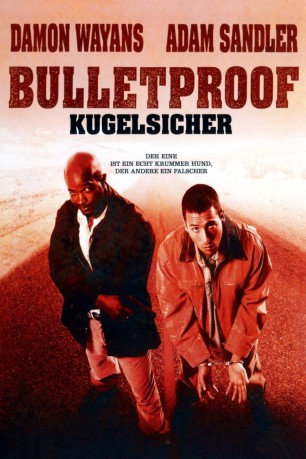

#6082 Bulletproof
 
 IMDB-Wertung: 5.8 / 10
IMDB-Wertung: 5.8 / 10  Tomatometer: 8
Tomatometer: 8  Metascore: 0
Metascore: 0 
Archie Moses und Rock Keats waren früher unzertrennlich – heute stehen sie auf unterschiedlichen Seiten des Gesetzes, und jeder fühlt sich vom anderen verraten. Der einzige Mensch, der Archie und Rock mehr hasst als die beiden einander, ist der skrupellose Drogenboss Frank Colton, der sie unter die Erde bringen will! Durch eine eigenwillige Wendung des Schicksals befinden sich Moses und Keats plötzlich auf der Flucht – zu allem Überfluss auch noch gemeinsam. Mit etwas Glück können sich die beiden Pechvögel aus ihrer misslichen Lage befreien … wenn sie sich nicht vorher gegenseitig umbringen!
Jahr: 1996
Dauer: 84 Minuten
FSK: 16
Land: USA Studio: Universal PicturesTonspuren: DTS - ,
Untertitel: Deutsch,
Auflösung: 1080p (1920x816) Größe: 6246 MB
Genre: Action, Komödie, Krimi
Regisseur: Ernest R. Dickerson
Drehbuch: Ragnar Bragason
Soundtrack:
Darsteller:
 Damon Wayans als Keats
Damon Wayans als Keats Adam Sandler als Moses
Adam Sandler als Moses James Caan als Colton
James Caan als Colton- Jeep Swenson als Bledsoe
- James Farentino als Capt. Jensen
 Kristen Wilson als Traci
Kristen Wilson als Traci Allen Covert als Detective Jones
Allen Covert als Detective Jones Bill Nunn als Finch
Bill Nunn als Finch Monica Potter als Biker's Woman
Monica Potter als Biker's Woman Jonathan Loughran als Rookie Cop
Jonathan Loughran als Rookie Cop Steve White als Veteran Cop
Steve White als Veteran Cop Gwen McGee als Surgeon
Gwen McGee als Surgeon- Charmaine Craig als Waitress
- Jill Holden als Gruesome Lady
 Xander Berkeley als Gentry
Xander Berkeley als Gentry- Sal Landi als Cole
 Conrad Goode als Biker
Conrad Goode als Biker Maury Sterling als Skinny Guy
Maury Sterling als Skinny Guy Scott Hoxby als Lindsay
Scott Hoxby als Lindsay Garret Sato als Bad Guy
Garret Sato als Bad Guy- Lisa Michelle Axelrod als Waitress , uncredited
 Kacee DeMasi als Innocent Bystander , uncredited
Kacee DeMasi als Innocent Bystander , uncredited- Michelle Nicholson als Wedding Guest , uncredited
 Sven-Ole Thorsen als Gunman at Motel , uncredited
Sven-Ole Thorsen als Gunman at Motel , uncredited- Larry McCoy als Detective Sulliman
- Mark Roberts als Charles
- Mark Casella als Disneyland Cop
- Andrew Shaifer als Cop at Airport
- Bill Capizzi als Tommy
- Lovette als Porn Woman
- John Decker als Porn Man
- David Labiosa als Rigo
- Victor Aaron als Hispanic Man
- Jacqui Dickerson als Bartender
- Donna M. Duffy als Anesthesiologist
- Janice Rivera als Señorita
- Loetta Earnest als Señorita
- Cindy Barrera als Señorita
- Ford Scott als Arizona Highway Patrol
- Paule Stewart als Moses' Mom
- Tracee Cocco als Club Goer , uncredited
- Ralph Moratz als Extra , uncredited
Datei: X:\1996\Bulletproof (1996, FSK16, 1920x816).mkv seit 28.04.2017
Festplatte: HD 1996-2002
 Es gibt insgesamt 78 Filme in der Gruppe '1996'
Es gibt insgesamt 78 Filme in der Gruppe '1996'